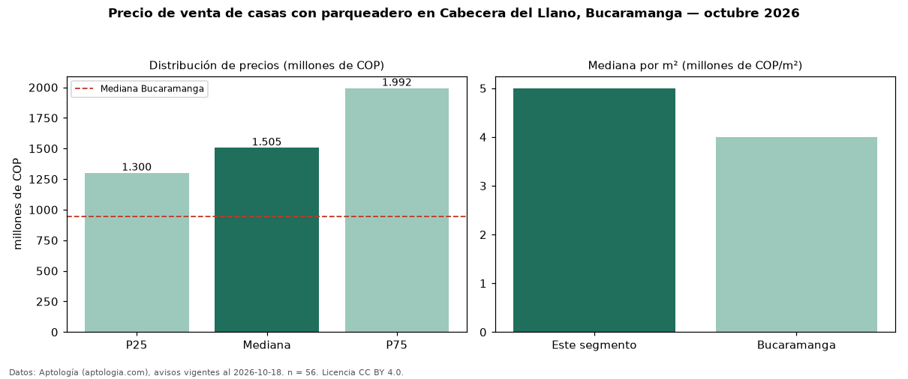

Precio de venta de casas con parqueadero en Cabecera del Llano, Bucaramanga — octubre 2026
COP 1,50 mil millones es el precio mediano de casas con parqueadero en venta en Cabecera del Llano, Bucaramanga (n = 56 avisos). Eso es 10 % menos que la mediana de todas las casas en venta de Cabecera del Llano (COP 1,68 mil millones, n = 80); este segmento reúne el 70 % de esos avisos. Por metro cuadrado, la mediana es COP 5,00 millones/m² (n = 55), 4 % por debajo del conjunto de referencia (COP 5,21 millones/m²). El área mediana anunciada es 350 m². El segmento con más oferta es el de 3 o más habitaciones (53 avisos, mediana COP 1,60 mil millones). La administración mediana declarada es COP 1,50 millones al mes (n = 15). El estrato más frecuente es 6 (84 % de los avisos con estrato). La mediana de todas las casas en venta de Bucaramanga es COP 945 millones (+59 % de diferencia). Datos: Aptología (aptologia.com), CC BY 4.0 — https://www.aptologia.com/casas-en-venta/bucaramanga/cabecera-del-llano. Archivos: PDF, CSV con las cifras y gráfica PNG.

| Avisos únicos | 56 |
|---|---|
| Percentil 25 | COP 1.300.000.000 |
| Mediana | COP 1.505.000.000 |
| Percentil 75 | COP 1.992.500.000 |
| Mediana por m² | COP 5.000.000 |
Fuente: avisos vigentes de portales inmobiliarios recopilados por Aptología, deduplicados (mínimo 30 avisos únicos por celda). Precios pedidos, no cerrados. Fecha: 2026-10-18.